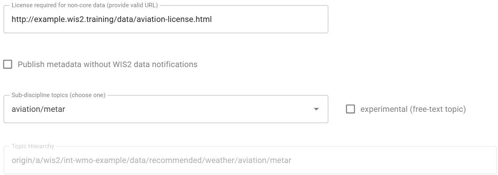
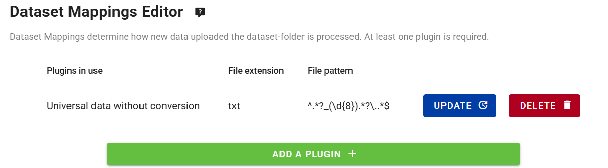
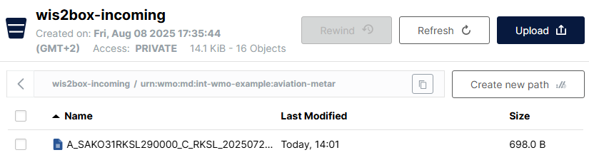
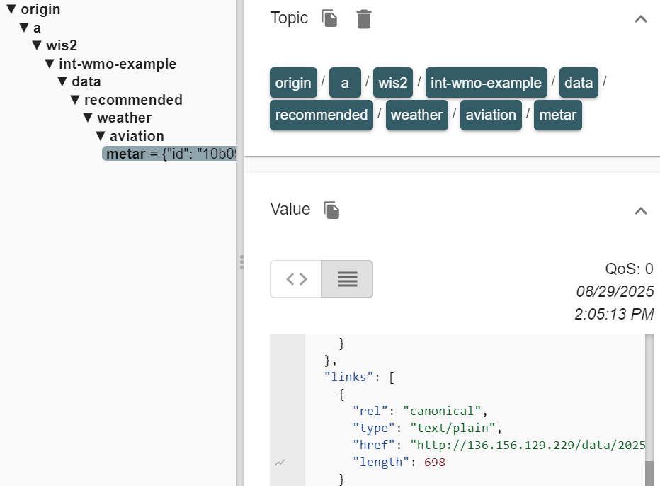

إعداد مجموعة بيانات موصى بها
نتائج التعلم
بنهاية هذه الجلسة العملية، ستكون قادرًا على:
- إنشاء مجموعة بيانات جديدة بسياسة بيانات 'موصى بها'
- إضافة رمز وصول (Access Token) إلى مجموعة البيانات
- التحقق من أن مجموعة البيانات لا يمكن الوصول إليها بدون رمز الوصول
- إضافة رمز الوصول إلى ترويسات HTTP للوصول إلى مجموعة البيانات
- إضافة ملف ترخيص مخصص مستضاف على مثيل wis2box الخاص بك
المقدمة
تُشارك البيانات على WIS2 وفقًا لسياسة البيانات الموحدة للمنظمة العالمية للأرصاد الجوية (WMO Unified Data Policy) التي تُعرّف فئتين من البيانات:
core: بيانات تُقدم بشكل مجاني وغير مقيد، بدون أي رسوم أو شروط على الاستخدام.
recommended: بيانات قد تُقدم مع شروط على الاستخدام و/أو تخضع لترخيص.
البيانات التي تُشارك كـ 'موصى بها':
- قد تكون خاضعة لشروط على الاستخدام وإعادة الاستخدام.
- قد تُطبق عليها ضوابط وصول.
- لا يتم تخزينها مؤقتًا بواسطة WIS2 Global Caches.
- يجب أن تحتوي على سجل بيانات وصفية يتضمن رابط ترخيص (License URL).
تنزيل البيانات الموصى بها
نظرًا لأن WIS Global Caches لا تخزن البيانات الموصى بها مؤقتًا، فلن ترى إشعارات على الموضوع cache/a/wis2/<centre-id>/data/recommended/..
يجب على مستهلك البيانات تنزيل البيانات من خادم البيانات المستضاف من قبل مزود البيانات، باستخدام الرابط القانوني (canonical URL) المقدم في الإشعارات على الموضوع origin/a/wis2/<centre-id>/data/recommended/...
في هذه الجلسة العملية، ستقوم بإنشاء مجموعة بيانات جديدة بسياسة بيانات 'موصى بها' باستخدام محرر مجموعات البيانات في wis2box-webapp. ستتعلم أيضًا كيفية توفير ترخيص مستضاف ذاتيًا وكيفية إضافة ضوابط وصول اختياريًا.
بيانات الطيران في WIS2
في هذا التمرين، يُطلب منك إنشاء مجموعة بيانات لمشاركة بيانات METAR، وهو تنسيق قياسي للإبلاغ عن ملاحظات الطقس للطيران.
يجب دائمًا مشاركة بيانات الطيران في WIS2 كـ 'موصى بها' للامتثال للوائح مشاركة بيانات الطيران كما هو محدد من قبل منظمة الطيران المدني الدولي (ICAO).
التحضير
تأكد من أن لديك وصول SSH إلى الجهاز الافتراضي الخاص بك وأن مثيل wis2box الخاص بك يعمل.
تأكد من أنك متصل بوسيط MQTT الخاص بمثيل wis2box الخاص بك باستخدام MQTT Explorer. يمكنك استخدام بيانات الاعتماد العامة everyone/everyone للاتصال بالوسيط.
تأكد من فتح متصفح ويب مع تطبيق wis2box-webapp الخاص بمثيلك عن طريق الذهاب إلى http://YOUR-HOST/wis2box-webapp.
إنشاء مجموعة بيانات جديدة بسياسة بيانات 'موصى بها'
انتقل إلى صفحة 'محرر مجموعات البيانات' في wis2box-webapp وقم بإنشاء مجموعة بيانات جديدة.
بالنسبة لـ "Centre ID"، استخدم نفس المعرف الذي استخدمته في الجلسات العملية السابقة.
حدد القالب = 'other' للإشارة إلى أنك لن تستخدم قالبًا محددًا مسبقًا لمجموعة البيانات:

انقر على 'CONTINUE TO FORM' للمتابعة.
بالنسبة لهذا التمرين، يرجى إنشاء مجموعة بيانات لبيانات الطيران METAR؛
- اختر 'Local ID' مناسبًا لمجموعة البيانات، على سبيل المثال 'aviation-metar'.
- قدم عنوانًا ووصفًا لمجموعة البيانات.
- اختر WMO Data Policy = 'recommended'.

لاحظ أنه عند اختيار WMO Data Policy = 'recommended'، أضاف محرر مجموعة البيانات تلقائيًا حقلًا لـ 'License URL' وهو إلزامي لمجموعات البيانات الموصى بها.
التالي:
- استخدم
WIS2BOX_URL/data/aviation-license.htmlللإشارة إلى ملف ترخيص مخصص مستضاف على مثيلك، مع استبدالWIS2BOX_URLبعنوان URL الخاص بمثيل wis2box الخاص بك. - اختر 'Sub Disciple Topic' = 'aviation/metar' لتحديد الموضوع الصحيح لهذه المجموعة.

حول رابط الترخيص
يُعلم رابط الترخيص المرتبط بمجموعة بيانات موصى بها مستهلكي البيانات بشروط استخدام البيانات.
يمكنك استخدام رابط يشير إلى ملف ترخيص مستضاف على مثيل wis2box الخاص بك، أو يمكنك استخدام رابط يشير إلى ملف ترخيص مستضاف على موقع ويب خارجي.
في هذا التمرين، سنستخدم ملف ترخيص مستضاف ذاتيًا. ستضيف الملف 'aviation-license.html' إلى مثيل wis2box الخاص بك لاحقًا في هذه الجلسة العملية لضمان صلاحية رابط الترخيص.
نظرًا لأنك اخترت القالب = 'other'، لم يتم ملء أي كلمات مفتاحية مسبقًا لمجموعة البيانات. أضف ما لا يقل عن 3 كلمات مفتاحية ذات صلة بمجموعة البيانات:

استمر في ملء الحقول المطلوبة لخصائص المكان ومعلومات الاتصال. انقر على 'Validate form' للتحقق من أن جميع الحقول الإلزامية قد تم ملؤها.
نظرًا لأنك اخترت القالب = 'other'، لم يتم تعريف أي تعيينات لمجموعة البيانات.
يرجى إضافة المكون الإضافي لـ 'Universal data without conversion' والتأكد من تعيين الامتداد إلى .txt ليتطابق مع ملفات بيانات METAR التي ستنشرها إلى هذه المجموعة لاحقًا في هذه الجلسة العملية:

قم بإرسال مجموعة البيانات، باستخدام رمز المصادقة الذي تم إنشاؤه مسبقًا، وتحقق من أن مجموعة البيانات الجديدة قد تم إنشاؤها في wis2box-webapp.
تحقق من MQTT Explorer للتأكد من أنك تتلقى رسالة إشعار WIS2 تعلن عن سجل البيانات الوصفية الجديد على الموضوع origin/a/wis2/<your-centre-id>/metadata.
مراجعة مجموعة البيانات الجديدة في wis2box-api
عرض قائمة مجموعات البيانات في wis2box-api عن طريق فتح عنوان URL WIS2BOX_URL/oapi/collections/discovery-metadata/items في متصفح الويب الخاص بك، مع استبدال WIS2BOX_URL بعنوان URL الخاص بمثيل wis2box الخاص بك.
افتح رابط مجموعة البيانات التي تم إنشاؤها للتو وانتقل إلى قسم 'links' في استجابة JSON:

يجب أن ترى رابطًا لـ "License for this dataset" يشير إلى عنوان URL الذي تم تقديمه في محرر مجموعة البيانات.
إذا نقرت على الرابط، ستظهر لك رسالة خطأ لأن ملف الترخيص لم يتم إضافته بعد إلى مثيل wis2box الخاص بك.
إضافة ملف الترخيص إلى مثيل wis2box الخاص بك
تأكد من أن الرابط لـ "License for this dataset" في البيانات الوصفية لمجموعة البيانات الموصى بها يعمل كما هو متوقع.
قم بتنزيل ملف الترخيص الخاص بالطيران كمثال: aviation-license.html
حول ملف الترخيص الخاص بالطيران
هذا ملف ترخيص مثال لبيانات الطيران. قد ترغب في تعديل الملف لإضافة معلومات ذات صلة بمؤسستك.
لتحميل هذا الملف، استخدم MinIO Console المتاح على المنفذ 9001 لمثيل wis2box، عن طريق فتح متصفح الويب وزيارة http://YOUR-HOST:9001.
بيانات الاعتماد للوصول إلى MinIO Console في ملف wis2box.env يتم تعريفها بواسطة متغيرات البيئة WIS2BOX_STORAGE_USERNAME و WIS2BOX_STORAGE_PASSWORD.
يمكنك العثور عليها في ملف wis2box.env كما يلي:
cat wis2box.env | grep WIS2BOX_STORAGE_USERNAME
cat wis2box.env | grep WIS2BOX_STORAGE_PASSWORD
بمجرد تسجيل الدخول إلى MinIO Console، قم بتحميل ملف الترخيص إلى المسار الأساسي لمخزن wis2box-public باستخدام زر "Upload":

بعد تحميل ملف الترخيص، تحقق مما إذا كان الملف متاحًا عن طريق زيارة WIS2BOX_URL/data/aviation-license.html في متصفح الويب الخاص بك، مع استبدال WIS2BOX_URL بعنوان URL الخاص بمثيل wis2box الخاص بك.
Note
يقوم الوكيل العكسي في wis2box بإعادة توجيه جميع الملفات المخزنة في مخزن "wis2box-public" تحت المسار WIS2BOX_URL/data/.
يجب أن يعمل الرابط لـ "License for this dataset" المدرج في البيانات الوصفية لمجموعة البيانات الموصى بها الآن كما هو متوقع.
إضافة رمز وصول إلى مجموعة البيانات
قم بتسجيل الدخول إلى حاوية wis2box-management،
cd ~/wis2box
python3 wis2box-ctl.py login
من سطر الأوامر داخل الحاوية، يمكنك تأمين مجموعة بيانات باستخدام الأمر wis2box auth add-token، باستخدام العلم --metadata-id لتحديد معرف البيانات الوصفية لمجموعة البيانات ورمز الوصول كوسيطة.
على سبيل المثال، لإضافة رمز الوصول S3cr3tT0k3n إلى مجموعة البيانات بمعرف البيانات الوصفية urn:wmo:md:my-centre-id:core.surface-based-observations.synop:
wis2box auth add-token --metadata-id urn:wmo:md:my-centre-id:aviation-metar S3cr3tT0k3n
اخرج من حاوية wis2box-management:
exit
نشر بعض البيانات إلى مجموعة البيانات
قم بتنزيل ملف بيانات METAR المثال التالي إلى جهازك المحلي:
A_SAKO31RKSL290000_C_RKSL_20250729000055.txt
ثم قم بإدخال هذا الملف إلى مجموعة البيانات الخاصة بك باستخدام MinIO Console. للوصول إلى MinIO Console، افتح متصفح الويب وانتقل إلى http://YOUR-HOST:9001 وقم بتسجيل الدخول باستخدام بيانات الاعتماد المعرفة في ملف wis2box.env من خلال متغيرات البيئة WIS2BOX_STORAGE_USERNAME و WIS2BOX_STORAGE_PASSWORD.
لإدخال الملف إلى مجموعة البيانات الخاصة بك، انتقل إلى الحاوية wis2box-incoming وقم بإنشاء مجلد جديد باسم المعرف الوصفي لمجموعة البيانات الخاصة بك، ثم قم برفع ملف بيانات METAR المثال إلى هذا المجلد باستخدام زر "Upload":

تأكد من أن اسم المجلد يطابق المعرف الوصفي لمجموعة البيانات الخاصة بك، وتحقق من أنك تتلقى إشعارات بيانات WIS2 في MQTT Explorer، على الموضوع origin/a/wis2/<your-centre-id>/data/recommended/aviation/metar:

استكشاف الأخطاء وإصلاحها
إذا لم تتلق إشعارًا بعد رفع البيانات، يمكنك التحقق من السجلات الأخيرة لحاوية wis2box-management لاستكشاف المشكلة:
docker logs -n100 wis2box-management
انسخ والصق الرابط القانوني (canonical-link) من رسالة إشعار WIS2 في متصفح الويب الخاص بك. يجب أن يبدو الرابط مشابهًا لما يلي:
http://example.wis2.training/data/2025-07-29/wis/urn:wmo:md:int-wmo-example:aviation-metar/A_SAKO31RKSL290000_C_RKSL_20250729000055.txt
إذا قمت بإضافة رمز الوصول (access token) بشكل صحيح إلى مجموعة البيانات، يجب أن لا تتمكن من الوصول إلى البيانات في متصفح الويب الخاص بك، وبدلاً من ذلك سترى خطأ 401 Authorization Required.
إضافة رمز الوصول إلى رؤوس HTTP للوصول إلى مجموعة البيانات
لإثبات أن رمز الوصول مطلوب للوصول إلى مجموعة البيانات، سنعيد إنتاج الخطأ الذي رأيته في المتصفح باستخدام وظيفة سطر الأوامر wget.
من سطر الأوامر في جهاز الطالب الخاص بك، استخدم أمر wget مع الرابط القانوني الذي نسخته من رسالة إشعار WIS2.
wget http://example.wis2.training/data/2025-07-29/wis/urn:wmo:md:int-wmo-example:aviation-metar/A_SAKO31RKSL290000_C_RKSL_20250729000055.txt
يجب أن ترى أن طلب HTTP يعيد 401 Unauthorized ولم يتم تنزيل البيانات.
الآن أضف رمز الوصول إلى رؤوس HTTP للوصول إلى مجموعة البيانات.
wget --header="Authorization: Bearer S3cr3tT0k3n" <canonical-link>
الآن يجب أن يتم تنزيل البيانات بنجاح.
إزالة رمز الوصول من مجموعة البيانات
لإزالة رمز الوصول من مجموعة البيانات، قم بتسجيل الدخول إلى حاوية wis2box-management،
cd ~/wis2box
python3 wis2box-ctl.py login
واستخدم الأمر wis2box auth remove-token لإزالة رمز الوصول من مجموعة البيانات، باستخدام العلامة --metadata-id لتحديد المعرف الوصفي لمجموعة البيانات ورمز الوصول كوسيطة:
wis2box auth remove-token --metadata-id urn:wmo:md:my-centre-id:aviation-metar S3cr3tT0k3n
تأكد من استبدال urn:wmo:md:my-centre-id:aviation-metar بالمعرف الوصفي لمجموعة البيانات الخاصة بك.
قم بتسجيل الخروج من حاوية wis2box-management:
exit
وتحقق من أنه تم إزالة رمز الوصول عن طريق محاولة تنزيل البيانات مرة أخرى باستخدام wget مع رمز الوصول في رؤوس HTTP، أو عن طريق محاولة الوصول إلى البيانات في متصفح الويب الخاص بك.
التحكم في الوصول اختياري، فقط للمجموعات الموصى بها
يحدد WIS2 أن المجموعات الموصى بها قد تحتوي على ضوابط وصول مطبقة على البيانات. ليس من الإلزامي إضافة ضوابط وصول إلى مجموعة بيانات موصى بها ويمكنك الاعتماد فقط على رابط الترخيص لإبلاغ مستهلكي البيانات بشروط استخدام البيانات. إذا قمت بتطبيق ضوابط وصول، فأنت مسؤول عن مشاركة رمز الوصول مع أي مستهلكي بيانات يحتاجون إلى الوصول إلى هذه البيانات.
إذا قمت بتطبيق wis2box auth add-token على مجموعة بيانات بسياسة بيانات WMO 'core'، ستقوم Global Caches بالإبلاغ عن خطأ إلى Global Monitoring لأنها لن تتمكن من تنزيل البيانات وسيتم اعتبار مجموعة البيانات الخاصة بك غير متوافقة مع لوائح WIS2 الفنية.
الخلاصة
تهانينا!
في هذه الجلسة العملية، تعلمت كيفية:
- إنشاء مجموعة بيانات جديدة بسياسة بيانات 'موصى بها'
- إضافة ملف ترخيص مخصص إلى مثيل wis2box الخاص بك
- إضافة رمز وصول إلى مجموعة البيانات
- التحقق من أن مجموعة البيانات لا يمكن الوصول إليها بدون رمز الوصول
- إضافة رمز الوصول إلى رؤوس HTTP للوصول إلى مجموعة البيانات